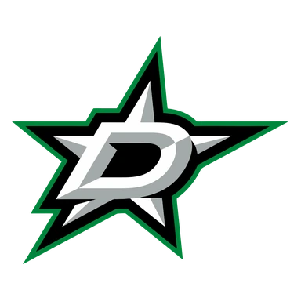
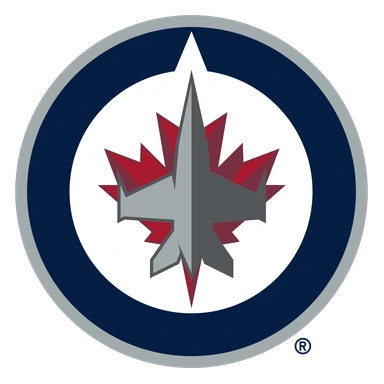

Вашингтон — Нью-Джерси итог матча 15 ноября
Статистика матча
- 46Броски в створ33
- 1 из 4Голы в большинстве2 из 4
- 8Штрафные минуты8
- 61 %Выигранные вбрасывания39 %
- 21Силовые приёмы20
- 11Блокированные броски12
- 3Отборы7
- 16Потери22
Удаления по минутам 7
- 1-й период
- Matt RoyБлокировка2 мин
- 2-й период
- Jack HughesТолчок клюшкой2 мин
- Ryan LeonardHigh sticking double minor4 мин
- Dylan StromeЗадержка клюшкой2 мин
- Jonas SiegenthalerЗадержка клюшкой2 мин
- 3-й период
- Evan RodriguesЗадержка клюшки соперника2 мин
- Declan ChisholmБлокировка2 мин
Данные лиги.
- ТурнирНХЛ
Коротко о матче
Вашингтон — Нью-Джерси 4:7: гости победили.
По форме разница была заметной: в пяти последних матчах Нью-Джерси — 4 победы, Вашингтон — 2 победы. Слабое место — оборона: Вашингтон — в среднем 4,2 пропущенной шайбы за игру в этих пяти матчах.
Обе команды играют результативно: больше 5,5 шайб набиралось в 14 из 16 их последних матчей. До этого команды встречались 3 апреля 2026 года: Нью-Джерси — Вашингтон 7:3.
Форма: последние матчи
 Вашингтон 2 победы из 5
Вашингтон 2 победы из 5
 П1:5
П1:5
П5:6 В4:3
В4:3 В3:2
В3:2 П2:5
П2:5
Нью-Джерси 4 победы из 5
 В5:4
В5:4 В5:4
В5:4 В4:0
В4:0
П2:4- В5:2
Личные встречи
- Нью-Джерси7:3Вашингтон
- Вашингтон2:1Нью-Джерси
- Нью-Джерси3:4ОТВашингтон
- Вашингтон2:3БНью-Джерси
- Нью-Джерси5:6Вашингтон
- Вашингтон2:3Нью-Джерси
Положение в таблице
| Команда | Место | И | В | П | Голы | Очки |
|---|---|---|---|---|---|---|
| 10 | 18 | 10 | 8 | 62:65 | 20 | |
| 2 | 21 | 15 | 6 | 80:61 | 30 |
Куда дальше
Все прогнозы дня — в TelegramПрогнозы на КХЛ, НХЛ и футбол, итоги каждое утро. Бесплатно.
Открыть каналМатериалы носят информационный характер и не гарантируют результат. Реклама букмекеров на сайте не размещается. Сайт только для совершеннолетних (18+).